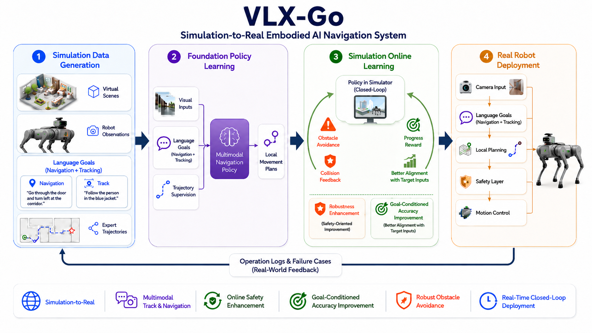
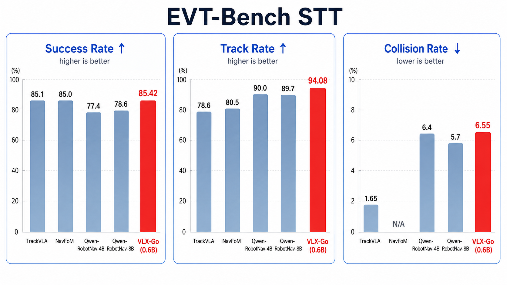

Introduction
Embodied navigation is not only a perception problem, and it is not only a control problem. A robot must understand what the user wants, observe a changing scene, follow a target or route, avoid obstacles, and continuously correct its next movement as new observations arrive.
VLX-Go is designed for this practical middle layer. It is a lightweight vision-language waypoint planner that receives recent monocular frames, the current observation, and a natural-language instruction, then predicts short-horizon local waypoints for a downstream controller or simulator.
Instead of asking a general-purpose VLM to describe the scene or emit text-only actions, VLX-Go maps visual-language state directly into a compact motion interface. This makes it better suited for target following, local navigation, dynamic obstacle avoidance, and closed-loop evaluation where predictions must be executed, observed, and revised over time.
From Scene Description to Local Motion
The core question behind VLX-Go is: how can a multimodal model turn what it sees and what it is told into the next few executable navigation targets?
Many vision-language systems are strongest when they produce language: they caption scenes, answer questions, or explain what is visible. For a robot, however, language is usually not the final control interface. The system eventually needs local goals, motion targets, or trajectories that can be consumed by a controller.
VLX-Go focuses on this interface. It does not try to plan an entire global route in one step, and it does not rely on a text response as the action. It predicts a short sequence of local waypoints, then lets the downstream controller handle velocity commands, safety constraints, and platform-specific dynamics.

Instruction-Conditioned Waypoint Planning
At each time step, VLX-Go solves a receding-horizon waypoint prediction problem. The model receives three sources of context: recent visual history, the current frame, and the language instruction that defines the task intent.
The recent frames help the planner understand motion and change. A target person may move behind an obstacle, a doorway may become visible, or the robot may drift from the intended path. The current frame anchors the immediate state, while the instruction tells the model what matters: follow the person, go through the corridor, approach a target, or avoid obstacles.
The output is a short-horizon waypoint sequence. Each waypoint represents a local motion target, such as a position, heading, or another controller-specific representation. The exact dimensionality depends on the dataset and control interface, but the design principle is simple: predict the next useful local goals, then replan when the next observation arrives.
history frames + current frame + instruction
|
v
VLX-Go waypoint planner
|
v
short-horizon waypoints -> controller / simulatorA Lightweight 0.6B Planner
VLX-Go uses a 0.6B-scale planner. This is important for embodied systems because navigation often runs in a repeated closed loop rather than as a one-off request. Lower inference cost makes it easier to evaluate frequently, deploy closer to the robot, and combine planning with safety checks or simulator feedback.
The model is intentionally scoped around short-horizon local motion. This keeps the planning target compact while still leaving room for language-conditioned behavior and temporal visual context. In dynamic scenes, earlier predictions can be corrected by the next observation instead of being treated as a fixed long-range plan.
Closed-Loop Navigation
VLX-Go separates high-level waypoint prediction from platform-specific low-level control. The planner predicts local goals; the controller executes them, applies safety constraints, and returns the next observation. The model then predicts the next segment.
This rolling design is especially useful in dynamic navigation. Targets may move, obstacles may enter the camera view, and the robot's executed motion may differ slightly from the predicted path. Closed-loop prediction allows the planner to respond to these changes rather than committing to a stale route.
The same structure also supports a simulation-to-real workflow. Simulation data can provide diverse scenes, observations, language goals, and expert trajectories. Online simulator learning can then expose the policy to execution-time feedback such as obstacle avoidance, collision signals, progress rewards, and alignment with the target instruction. Finally, the learned planner can be deployed on real robots behind a safety and control layer.
Training and Evaluation
VLX-Go is trained first from offline trajectory data and can then be refined with online simulator feedback. Offline learning teaches the model to associate visual history, instructions, and local waypoint targets. Online optimization complements this by showing the model what happens when its predictions are actually executed.
| Phase | Data / Signal | Objective |
|---|---|---|
| Offline trajectory learning | Demonstration trajectories, video frames, language instructions | Learn target following and local waypoint generation |
| Online optimization | Simulator feedback, collision signals, target state, reward signals | Improve robustness to occlusion, obstacles, and closed-loop drift |
Typical supervised objectives include waypoint regression, trajectory direction loss, optional velocity or action auxiliary loss, and smoothness regularization. The online stage helps cover failure modes that static demonstrations may underrepresent, including occlusion, obstacle interactions, and accumulated drift after repeated execution.

EVT-Bench STT evaluation. At the 0.6B scale, VLX-Go reaches a strong success rate and the highest tracking rate among the listed methods, while collision-rate reduction remains an important direction for future simulator, reward, controller, and safety-constraint tuning.
Metrics: SR is success rate, TR is tracking rate, and CR is collision rate. VLX-Go demonstrates that a compact planner can achieve competitive navigation success and strong target tracking, while preserving a deployable interface for closed-loop embodied systems.
Engineering Value: A Practical Navigation Interface
From an engineering perspective, VLX-Go turns multimodal understanding into a navigation-ready signal. A robot does not need only a caption of the scene; it needs a next set of local goals that can be checked, constrained, and executed.
The short-horizon waypoint interface is useful because it keeps responsibilities clean. The model handles visual-language planning. The controller handles physical execution. The simulator and safety layer provide feedback and constraints. This separation makes the system easier to evaluate, debug, and move from simulation toward real deployment.
VLX-Go builds on the technical direction of OmTrackVLA and extends it toward lightweight waypoint prediction and closed-loop navigation research. The goal is not just to make a model that understands navigation instructions, but to make one that can repeatedly convert those instructions and observations into motion targets a robot can use.
For more technical details and open-source projects, please visit: om-ai-lab/VLX-Go.